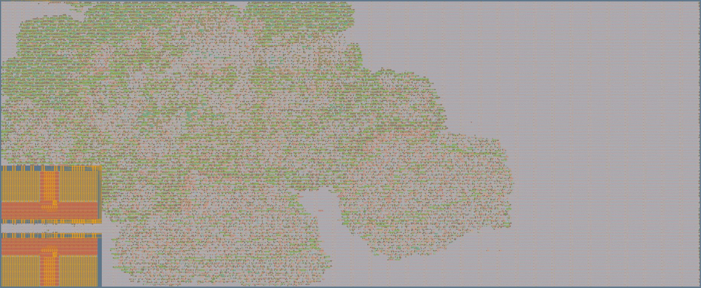

The Programmable Bit Engine has two small bit-level processors with a 16-bit instruction set. They run {{N_PROTOS}} protocols, from UART and I2C to USB and 10BASE-T Ethernet, as programs loaded at run time, two at a time. Line coding, CRC and timing live in shared hardware that any program can use.

A protocol is a short program, {{MIN_WORDS}} to {{MAX_WORDS}} words. The hardware does the work that software can't do fast enough on a 60 MHz chip, and does it generally, so each new block serves several protocols.
Each 16-bit instruction has a 0–15 tick delay field, so most bit timing needs no extra wait instructions. Pin, wait, jump, shift, FIFO and flag operations describe a protocol cycle by cycle.
A CRC unit for any polynomial up to 32 bits; a line coder for NRZ, NRZI and Manchester with bit stuffing and clock recovery; parity, timeouts, 16-byte FIFOs with mark and rewind.
Each engine has its own 256-word SRAM. They share flags, and an optional FIFO link lets one engine pass its bytes straight to the other, e.g. a UART-to-I2C bridge with no host in the loop.
The host (the demo board's microcontroller) loads each engine's program over SPI with 1 or 4 data lanes, then exchanges bytes through the FIFOs. Purple marks hardware added after the first design for USB, CAN and Ethernet.
Registers, host commands and the full diagrams: diagrams & registers. Assembler: pbe_v1/tools/pbe_asm.py.
{{N_A}} of {{N_PROTOS}} are programs written after the hardware they run on existed, with no RTL change. That includes the {{N_BLIND}} protocols of a blind benchmark, listed and committed before any attempt: all {{N_BLIND}} run. Only CAN needs protocol-specific hardware. Every protocol has a testbench against a model of the device on the other side of the wire.
Program only: written after the hardware it runs on existed, no RTL change; “blind” marks the benchmark. General hardware: the first programs, which shaped the shared hardware. New, general hardware: needed new blocks, built to be general and shared by other protocols. Protocol hardware: CAN's bit-synchronous block, the one protocol-specific unit.
Directed testbenches against device models, a golden model compared every clock, third-party decoders, formal proofs, mutation testing and gate-level simulation on the routed netlist, under two simulators.
Every design decision is written down with its alternatives, and every bug with the code before and after and the test that fails before the fix. Decisions · Bug log · Verification
LibreLane place and route on IHP SG13CMOS5L, the Tiny Tapeout precheck, and the full testbenches re-run on the routed gate-level netlist.
| Corner | Setup | Hold |
|---|---|---|
| slow · 1.08 V · 125 °C | {{SETUP_SLOW}} | {{HOLD_SLOW}} |
| typical · 1.20 V · 25 °C | {{SETUP_TYP}} | {{HOLD_TYP}} |
| fast · 1.32 V · −40 °C | {{SETUP_FAST}} | {{HOLD_FAST}} |
Positive at every corner. Numbers from the latest gds run, read when this page was built.